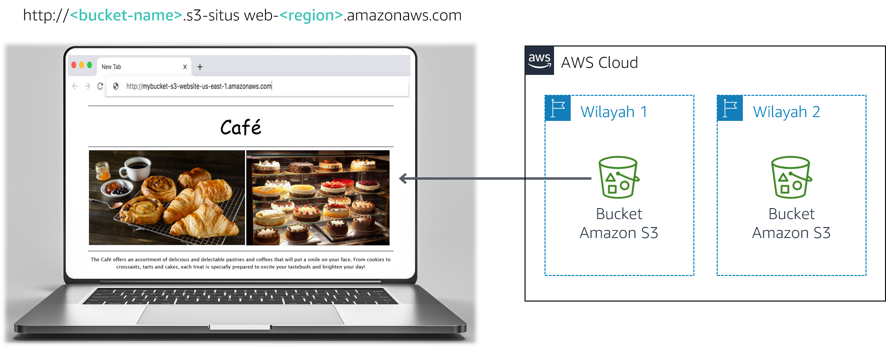

Frank dan Martha adalah tim suami dan istri yang memiliki dan menjalankan bisnis kafe kecil yang menjual makanan penutup serta kopi. Putri mereka, Sofia, dan karyawan mereka yang lain, Nikhil—yang merupakan siswa sekolah menengah — juga bekerja di kafe. Kafe ini memiliki satu lokasi di kota besar.
Kafe saat ini tidak memiliki strategi pemasaran. Mereka kebanyakan mendapatkan pelanggan baru ketika seseorang lewat, melihat kafe, dan memutuskan untuk mencobanya. Kafe ini memiliki reputasi untuk makanan penutup dan kopi berkualitas tinggi, tapi reputasi mereka terbatas pada orang-orang yang pernah berkunjung, atau yang pernah mendengarnya dari pelanggan mereka.
Sofía menyarankan Frank dan Martha untuk memperluas kesadaran masyarakat terhadap apa yang ditawarkan kafe. Kafe belum memiliki web, dan saat ini tidak menggunakan layanan komputasi cloud apa pun. Namun, situasi akan berubah.
Di lab ini, Anda menggunakan Amazon Simple Storage Service (Amazon S3) untuk membangun situs web statis dan menerapkan praktik terbaik arsitektur untuk melindungi dan mengelola data Anda.
Setelah menyelesaikan lab ini, Anda akan mampu:

Catatan: Di lab tantangan ini, Anda akan menemukan beberapa tugas tanpa mendapat instruksi langkah demi langkah. Anda harus memikirkan cara untuk menyelesaikan tugas Anda sendiri.
Diperlukan waktu sekitar 60 menit untuk menyelesaikan lab ini.
Dalam lingkungan lab ini, akses ke layanan AWS dan tindakan layanan mungkin dibatasi untuk orang-orang yang diperlukan untuk menyelesaikan instruksi lab. Anda mungkin akan mengalami error jika mencoba mengakses layanan lain atau melakukan tindakan di luar yang dijelaskan di lab ini.
Di bagian atas instruksi ini, pilih Start Lab (Mulai Lab) untuk meluncurkan lab Anda.
Panel Start Lab (Mulai Lab) terbuka dan menampilkan status lab.
Tip: Jika Anda memerlukan lebih banyak waktu untuk menyelesaikan lab, pilih tombol Start Lab (Mulai Lab) lagi untuk memulai ulang pengatur waktu untuk lingkungan.
Tunggu hingga Anda melihat pesan Lab status: ready (Status lab: siap), lalu tutup panel Start Lab (Mulai Lab) dengan memilih X.
Di bagian atas instruksi ini, pilih AWS.
Tindakan ini akan membuka Konsol Manajemen AWS di tab browser baru. Anda akan login ke sistem secara otomatis.
Tip: Jika tab browser baru tidak terbuka, banner atau ikon biasanya berada di bagian atas browser Anda dengan pesan bahwa browser Anda mencegah situs web membuka jendela sembulan. Pilih banner atau ikon lalu pilih Allow pop-ups (Izinkan sembulan).
Atur tab AWS Management Console (Konsol Manajemen AWS) agar ditampilkan bersama instruksi ini. Idealnya, Anda akan dapat melihat kedua tab browser sekaligus, sehingga Anda dapat mengikuti langkah-langkah lab dengan mudah.
Sofía mengatakan kepada Nikhil bahwa ia kafenya memiliki situs web yang secara visual akan menampilkan penawaran kafe. Situs web ini juga akan menyediakan detail bisnis, seperti lokasi toko, jam kerja, dan nomor telepon untuk pelanggan.
Nikhil senang ia diminta untuk membuat situs web pertama kafe tersebut.
Untuk tantangan pertama ini, Anda akan mengambil peran Nikhil dan menggunakan Amazon S3 untuk membuat situs web dasar untuk kafe.
Dalam tugas ini, Anda akan mengekstrak file yang dibutuhkan untuk membuat situs web statis.
Dalam tugas ini, Anda akan membuat sebuah bucket S3 dan mengonfigurasinya untuk meng-hosting situs web statis.
Buka Amazon S3 console(Konsol Amazon S3).
Buat bucket untuk meng-hosting situs web statis Anda.
Aktifkan hosting situs web statis pada bucket Anda.
Dalam tugas ini, Anda akan mengunggah file statis ke bucket S3 Anda.
Jawaban akan direkam saat Anda memilih tombol Submit (Kirim) biru di atas di bagian akhir lab.
Catatan: Biarkan halaman web pertanyaan terbuka di tab browser Anda. Anda akan kembali ke sana nanti di lab ini.
Frank menyampaikan rencananya untuk membuat banyak jenis pastri baru untuk kafe. Anda menyadari bahwa Anda harus mengunggah gambar untuk setiap makanan penutup baru yang ia ciptakan, dan memungkinkan akses publik pada objek itu. Anda tidak ingin melakukan proses ini secara manual. Sebaliknya, Anda memutuskan untuk membuat kebijakan bucket yang secara otomatis membuat setiap objek yang diunggah ke folder bersifat publik.
Petunjuk: Jika Anda kehabisan ide, lihat contoh dalam Dokumentasi AWS.
Selamat! Anda sekarang memiliki situs web statis untuk kafe.
Anda menunjukkan situs baru kepada Sofia, dan dia sangat terkesan. Kerja bagus!
Anda dan Sofía mendiskusikan bahwa Anda mungkin perlu membuat banyak pembaruan ke situs web karena jumlah penawaran kafe berkembang.
Olivia, seorang AWS Solutions Architect dan pelanggan kafe, menyarankan Anda untuk menerapkan strategi untuk mencegah penimpaan dan penghapusan objek situs web secara tidak disengaja.
Anda perlu membuat beberapa perubahan pada situs web, sehingga Anda memutuskan bahwa ini akan menjadi saat yang tepat untuk mengeksplorasi versioning objek.
Dalam tugas ini, Anda akan mengaktifkan versioning pada bucket S3 Anda dan mengonfirmasikan keberhasilannya.
Catatan: Perhatikan bahwa setelah mengaktifkan versioning, Anda tidak dapat menonaktifkannya.
bgcolor="gainsboro".bgcolor="cornsilk".bgcolor="gainsboro".
Praktik terbaik arsitektur
Dalam tugas ini, Anda menggunakan satu teknik untuk menerapkan arsitektur praktik terbaik perlindungan data Anda.
Setelah mengaktifkan versioning, Anda menyadari bahwa ukuran bucket S3 akan terus tumbuh saat Anda mengunggah objek dan versi baru. Untuk menghemat biaya, Anda memutuskan untuk menerapkan strategi menghentikan beberapa versi lama tersebut.
Dalam tugas ini, Anda akan menetapkan kebijakan siklus hidup untuk secara otomatis memindahkan versi lama objek dalam bucket sumber Anda ke S3 Standard-Infrequent Access (S3 Standard-IA). Kebijakan akhirnya juga harus mengakhiri objek.
Bagus! Anda sekarang seharusnya memiliki konfigurasi siklus hidup yang akan memindahkan objek bucket sumber versi lama Anda ke S3 Standard-IA setelah 30 hari. Kebijakan ini juga akan secara permanen menghapus objek yang berada di S3 Standard-IA setelah 365 hari.
Praktik terbaik arsitektur
Dalam tugas ini, Anda menerapkan praktik terbaik arsitektur dalam menentukan manajemen siklus hidup data.
Di kesempatan lain Olivia datang ke kafe, Anda menceritakan kepadanya tentang pembaruan situs web. Anda menjelaskan langkah-langkah yang Anda ambil untuk melindungi file statis situs web dari penimpaan atau penghapusan secara tidak sengaja. Olivia memberitahu Anda bahwa replikasi lintas Wilayah adalah fitur lain dari Amazon S3 yang juga dapat Anda gunakan untuk membuat cadangan dan mengarsipkan data penting.
Dalam tugas ini, Anda akan mengaktifkan replikasi lintas Wilayah pada bucket S3 sumber Anda.
Mereplikasi seluruh bucket sumber.
Menggunakan CafeRole untuk peran AWS Identity and Access Management (IAM). IAM role ini memberikan izin kepada Amazon S3 untuk membaca objek dari bucket sumber dan mereplikasikannya ke bucket tujuan.
Jika Anda menemukan peringatan The replication rule is saved, but it might not work (Aturan replikasi disimpan, tetapi mungkin tidak berhasil), Anda dapat mengabaikannya dan melanjutkan ke langkah berikutnya.
Petunjuk: Jika Anda kehabisan ide, lihat Dokumentasi AWS untuk mendapat panduan.
Catatan: CafeRole memiliki izin sebagai berikut:
Version2012-10-17StatementActions3:ListBuckets3:ReplicateObjects3:ReplicateDeletes3:ReplicateTagss3:Get* Resource'*' EffectAllowKebijakan akses ini memungkinkan peran untuk melakukan tugas replikasi pada semua bucket S3. Di lingkungan produksi yang nyata, Anda harus membatasi kebijakan agar hanya berlaku untuk bucket S3 sumber dan tujuan Anda. Untuk informasi lebih lanjut tentang pembuatan IAM role, baca [Setting Up Permissions for Replication] (https://docs.aws.amazon.com/AmazonS3/latest/dev/setting-repl-config-perm-overview.html).
26 Kembali ke tab browser dengan pertanyaan pilihan ganda untuk lab ini, dan jawab pertanyaan berikut:
Praktik terbaik arsitektur
Dalam tugas ini, Anda menerapkan praktik terbaik arsitektur dalam mengotomatisasi pemulihan bencana.
Tip: Anda dapat mengirimkan pekerjaan Anda beberapa kali. Setelah Anda mengubah pekerjaan, pilih Submit (Kirim) lagi. Apa yang akan direkam untuk lab ini adalah pengiriman terakhir Anda.
Selamat! Anda telah menyelesaikan lab.
Sebuah panel dengan pesan ini akan muncul: DELETE has been initiated..._ (PENGHAPUSAN telah dimulai)... _You may close this message box now. (Anda dapat menutup kotak pesan ini sekarang.)
©2020 Amazon Web Services, Inc. dan afiliasinya. Hak cipta dilindungi undang-undang. Karya ini tidak boleh direproduksi atau didistribusikan ulang, seluruhnya atau sebagian, tanpa izin tertulis sebelumnya dari Amazon Web Services, Inc. Dilarang menyalin, meminjamkan, atau menjual secara komersial.